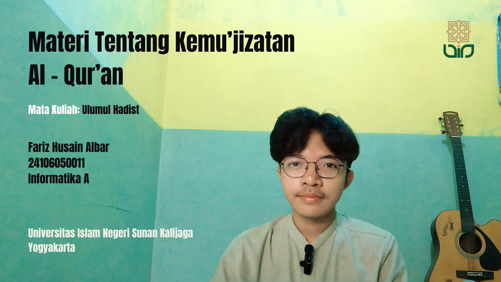
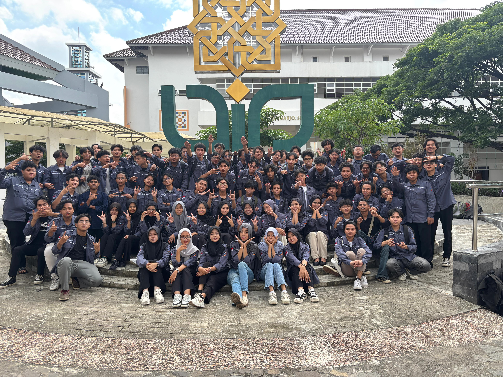
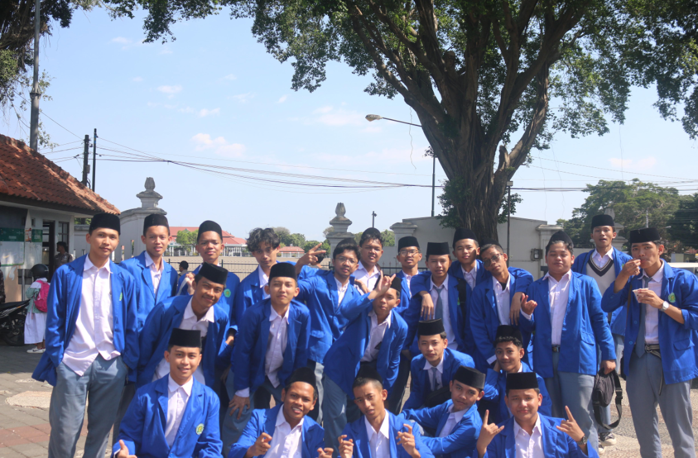
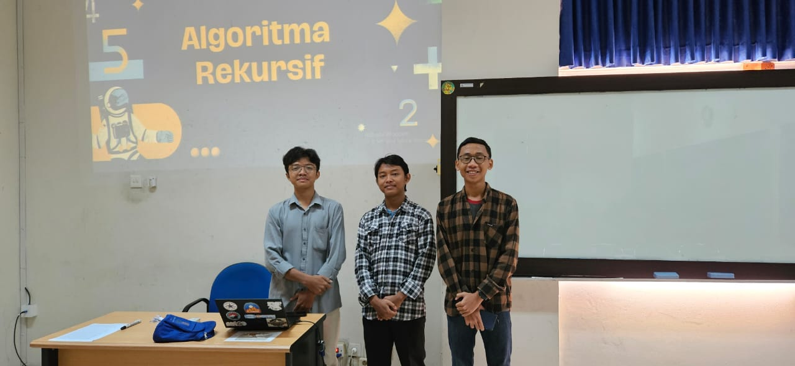
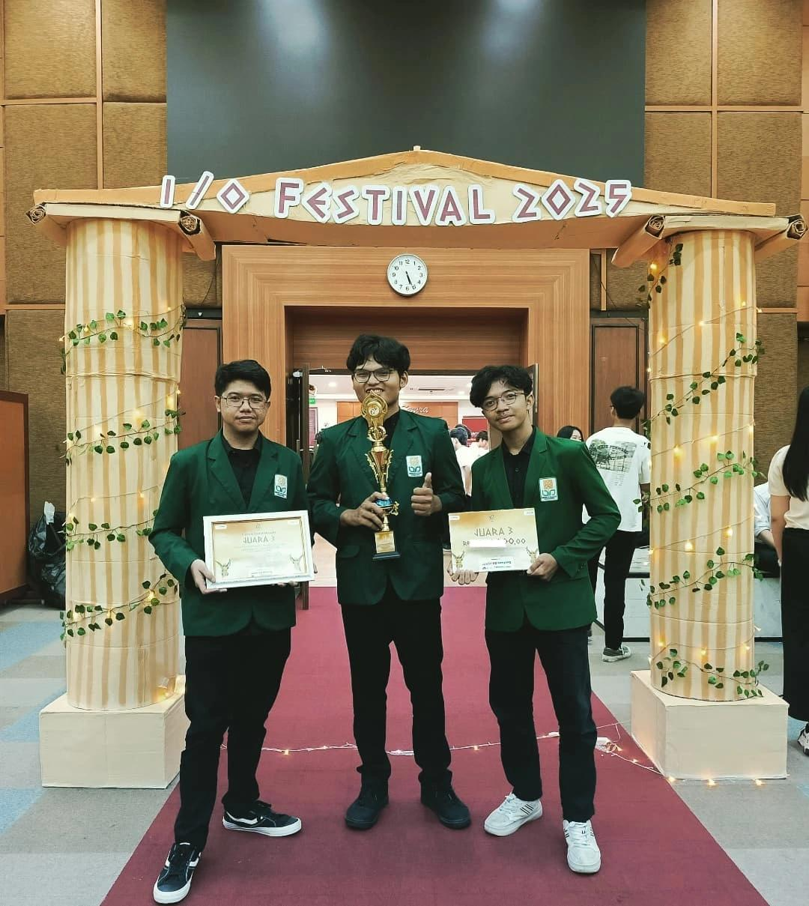

Tentang Saya

Mahasiswa semester tiga prodi Informatika dari UIN Sunan Kalijaga yang memiliki ketertarikan dan pengetahuan
dasar di bidang Desain UI/UX serta Analisis Data. Saya memahami pentingnya antarmuka yang ramah pengguna dan
keputusan yang didasarkan pada data. Dengan bekal tersebut, saat ini saya sangat termotivasi untuk
mengembangkan keahlian menjadi seorang Full-Stack Web Developer yang mampu membangun solusi digital secara
menyeluruh.
Saya memiliki pengalaman dalam merancang prototipe UI/UX menggunakan Figma, serta melakukan analisis data
sederhana dengan Python. Saya juga telah mempelajari dasar-dasar pengembangan web front-end,
termasuk HTML, CSS, JavaScript, serta framework seperti Tailwind CSS. Dengan kombinasi keterampilan ini,
saya yakin dapat memberikan kontribusi yang berarti dalam proyek pengembangan web yang berfokus pada
pengalaman pengguna dan pengambilan keputusan berbasis data.
Pendidikan

Saat ini saya sedang menempuh pendidikan di Universitas Islam Negeri Sunan Kalijaga Yogyakarta, tepatnya di
Program Studi Informatika pada Fakultas Sains dan Teknologi. Saya memulai studi saya pada tahun 2023 dan
berkomitmen untuk mengembangkan pengetahuan serta keterampilan saya di bidang teknologi informasi.
MA Wahid Hasyim Yogyakarta

Sebelum melanjutkan ke jenjang perguruan tinggi, saya menempuh pendidikan di MA Wahid Hasyim
Yogyakarta. Di sana, saya mendapatkan dasar-dasar pengetahuan yang kuat dalam berbagai mata pelajaran,
termasuk ilmu pengetahuan umum dan agama. Pendidikan di MA Wahid Hasyim memberikan landasan yang kokoh
bagi saya untuk melanjutkan studi di bidang Informatika.
Universitas Islam Negeri Sunan Kalijaga

Saat ini, saya sedang menempuh pendidikan di Universitas Islam Negeri Sunan Kalijaga Yogyakarta,
khususnya di Program Studi Informatika. Di sini, saya fokus pada pengembangan keterampilan di bidang
teknologi informasi, termasuk pemrograman, pengembangan web, dan analisis data. Pendidikan di UIN
Sunan Kalijaga memberikan saya kesempatan untuk memperdalam pengetahuan saya serta mempersiapkan diri
untuk karir di industri teknologi.
Skill Saya

Saya memiliki berbagai keterampilan yang mendukung tujuan saya untuk menjadi seorang Full-Stack Web
Developer. Berikut adalah beberapa keterampilan utama yang saya miliki:
- HTML
- CSS
- JavaScript
- Python